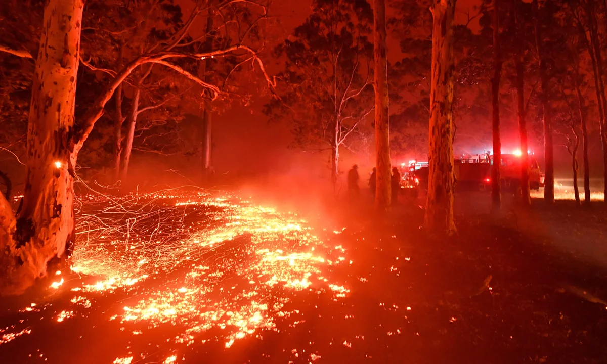

The Scale of the Crisis
Which Australian wildlife species are most at risk? How does the threat distribution vary across Australia's states and territories?
Section Summary · Scale of the Crisis
Australia has more than 1,900 species listed as threatened under the EPBC Act, spanning every major group in nature. Plants dominate the count, but mammals, birds, reptiles, frogs, and fish are all heavily represented — this is not an isolated crisis confined to one part of the natural world. Geographically, Western Australia and New South Wales carry the heaviest burden, where exceptional biodiversity collides with decades of land clearing, urban expansion, and habitat fragmentation.
Species Composition & Habitat Loss
A hierarchical view of how threat severity is distributed across animal groups, alongside the relationship between habitat loss and threatened status for individual species.
Numbat
Myrmecobius fasciatus
EPBC Act listed · Western Shield program
📷 Image source: britannica.com
Section Summary · Species Composition & Habitat Loss
Nearly two in five listed species are already classified as Endangered, while the Critically Endangered group — species one step from extinction — represents a significant and growing share. The habitat loss analysis makes the mechanism clear: species that have lost the greatest proportion of their habitat are overwhelmingly Endangered or Critically Endangered. Land clearing is not a background stressor — it is the primary driver pushing individual species toward the edge.
Trends & Biological Pressures
Tracking the accelerating growth in EPBC-listed threatened species over time, and the leading biological forces — invasive predators, disease, competition — driving that decline.

Section Summary · Trends & Biological Pressures
Both animal and plant listings have climbed without pause since 2000, with the total number of threatened species more than doubling over two decades. As biodiversity monitoring expands, Australia is not simply finding more wildlife — it is uncovering more species already under pressure, with ALA records and EPBC listings rising in step. Behind the numbers sit overlapping biological forces: invasive predators, altered fire regimes, and vegetation clearing each affect hundreds of listed species, compounding one another to drive decline far faster than any single threat could alone.
Australia has lost more mammal species than any other continent in the last 200 years, contributing to about one-third of mammal extinctions globally."
— WIRES Australia, Wildlife Rescue Organisation
Ecosystems Under Threat
Comparing threatened ecological communities across Australia's states and territories, and mapping the scale of planned and unplanned fire events from 2016 to 2021.

Section Summary · Ecosystems Under Threat
The biodiversity crisis extends beyond individual species to entire habitats. New South Wales and Queensland host the highest concentrations of Critically Endangered ecological communities — habitats so degraded that whole ecosystems are approaching collapse. Fire compounds the pressure: between 2016 and 2021, Northern Territory and Queensland recorded the most intense fire activity, with large unplanned fires — the most ecologically disruptive type — repeatedly burning through high-biodiversity regions.
Wetland Health & Biodiversity Monitoring
Exploring wetland fill levels and waterbird populations across Murray-Darling Basin survey sites, alongside ALA biodiversity monitoring records compared with EPBC threatened species listing increases over time.

Section Summary · Wetland Health & Biodiversity Monitoring
Australia's 67 Ramsar-listed wetlands are unevenly distributed across the continent, with the largest sites concentrated in the Murray-Darling Basin and Northern Territory — regions that provide critical refuge for migratory and endemic waterbirds. Survey data from the Basin reveals a direct relationship: sites with higher water fill levels consistently support larger waterbird populations, demonstrating that water management decisions have immediate ecological consequences for some of Australia's most threatened wildlife.
Conservation Actions & Species Recovery
Ranking the conservation strategies that benefit the most threatened species, and tracking the number of species successfully removed from the threatened list over time as a measure of conservation progress.

Section Summary · Conservation Actions & Species Recovery
Conservation works — but slowly. Predator and pest management benefits the greatest number of threatened species, followed by habitat protection and weed control, pointing to where investment delivers the highest return. Yet removals from the threatened list remain rare and uneven: most years see only a handful of species recover, with occasional peaks when formal reviews are completed. The pace of recovery is far below the rate at which new species are added — a gap that underscores the scale of the challenge still ahead.